Publicaciones
Artículos, congresos y capítulos de libro
Publicaciones del laboratorio relacionadas con la plataforma Robotic Park y sus líneas de investigación. Listado completo y actualizado de cada investigador en ORCID y Google Scholar.
✦ Publicaciones interactivas. Dentro de nuestros proyectos de innovación docente, cada artículo tiene su página propia con mapa conceptual, simuladores y autoevaluación para estudiar su contenido de forma práctica. Búscalas con el botón Versión interactiva.
Revistas
Micro aerial vehicles (MAVs), and quadrotors in particular, have become essential platforms for research and applications requiring agile and reliable flight. However, developing accurate models and well-tuned controllers for quadrotors is a significant challenge. This task is further complicated by mechanical coupling to external structures, such as gimbal testbeds, which introduce dynamic interactions that can degrade control performance. To address this challenge this paper proposes a relay-based approach for the identification of linear models and the autotuning of PID controllers for a quadrotor attitude and rate dynamics, using a Crazyflie 2.1 MAV mounted on a gimbal structure. These models are used to fine-tune the PID through the SIMC and AMIGO tuning PID rules. An event-based control strategy with an adaptive threshold is also implemented to optimize computational efficiency while maintaining control performance achieving a 30.56% reduction in CPU load compared to periodic execution. Experimental results demonstrate that the method significantly improves performance compared to the default controller, which fails under the additional inertia introduced by the gimbal. The study highlights the potential of relay-based autotuning for MAVs and establishes a foundation for future benchmarks and free-flight validation.
Networked control systems are critical in industrial applications but remain vulnerable to controller failures, which can destabilize operations. Blockchain technology offers a decentralized solution to enhance reliability. While blockchain technologies have been mainly used in financial systems (such as cryptocurrencies) so far, they are now being used in an increasing number of applications (such as logistics, power grids, or the Internet of Things) due to their powerful features and advantages. In this article, the use of blockchains is proposed and explored to deploy decentralized and reliable controllers. A blockchain-based controller architecture is presented to provide controllers that are permanently available, open accessible, and open source. Time to transaction finality and cost for transactions are analyzed in different blockchain networks, thus identifying their suitability. Our analysis reveals that blockchain networks can potentially be applied in slow processes with big enough time constants. Moreover, we propose the integration of event-based control to reduce transaction costs, thereby enhancing the viability of blockchain technologies in networked control systems. To demonstrate the practical application and cost efficiency of our approach, we present a case study focusing on a greenhouse climate control system. Results show that feasible blockchain networks – those compatible with sampling period constraints – consistently reduce control costs. For instance, on Fantom blockchain, event-based control achieved a 27.73-fold reduction in average control costs across six system variables over the eight-day operation period.
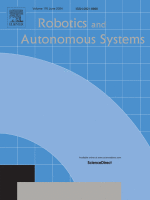
This paper proposes a method for the deployment of a multi-agent system of unmanned aerial vehicles (UAVs) as a shield with potential applications in the protection of infrastructures. The shield shape is modeled as a quadric surface in the 3D space. To design the desired formation (target distances between agents and interconnections), an algorithm is proposed where the input parameters are just the parametrization of the quadric and the number of agents of the system. This algorithm guarantees that the agents are almost uniformly distributed over the virtual surface and that the topology is a Delaunay triangulation. Moreover, a new method is proposed to check if the resulting triangulation meets that condition and is executed locally. Because this topology ensures that the formation is rigid, a distributed control law based on the gradient of a potential function is proposed to acquire the desired shield shape and proofs of stability are provided. Finally, simulation and experimental results illustrate the effectiveness of the proposed approach.
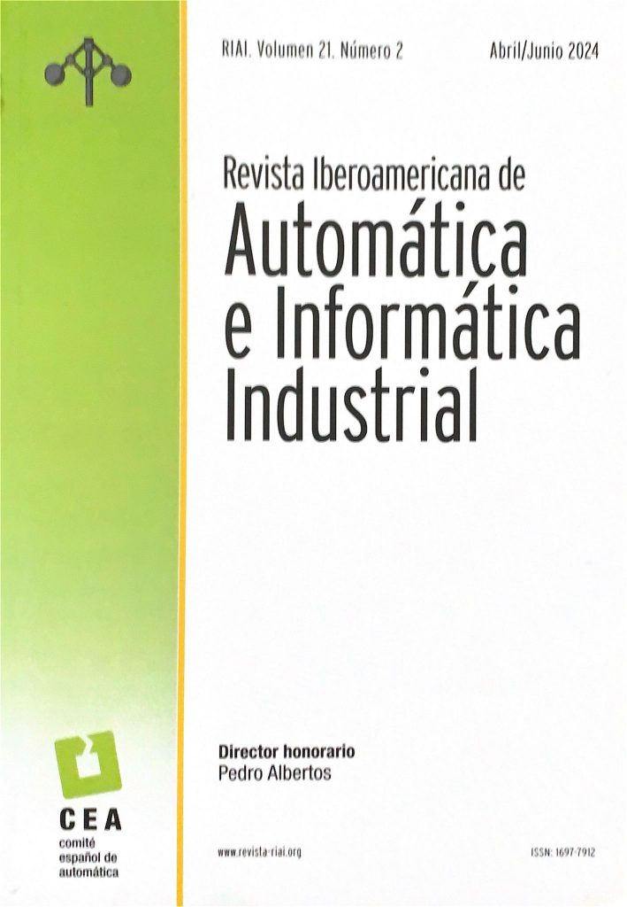
Este trabajo presenta el análisis del efecto de la frecuencia de muestreo y comunicación en un sistema multi-robot (SMR) en su desempeño temporal y en la carga computacional. El sistema experimental está compuesto por robots móviles del tipo Khepera IV y robots aéreos del tipo Crazyflie 2.1. El análisis se realiza sobre el movimiento del SMR desde unas condiciones iniciales hasta una formación deseada, que se define en base a un conjunto de distancias relativas deseadas entre agentes. Se evalúan tres escenarios en relación a la arquitectura del nivel de control: centralizado, distribuido en ROS 2 y distribuido a bordo del robot. Se determina la frecuencia mínima operativa para un muestreo periódico, y se presenta un protocolo de muestreo basado en eventos como propuesta para la reducción de transmisiones de mensajes. Para este caso, se determina un umbral constante óptimo, con un desempeño temporal equivalente al muestreo periódico óptimo, pero con una reducción del muestreo de un 80%.
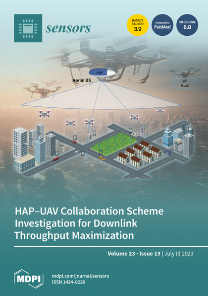
Nowadays, cyber-physical systems (CPSs) are composed of more and more agents and the demand for designers to develop ever larger multi-agent systems is a fact. When the number of agents increases, several challenges related to control or communication problems arise due to the lack of scalability of existing solutions. It is important to develop tools that allow control strategies evaluation of large-scale systems. In this paper, it is considered that a CPS is a heterogeneous robot multi-agent system that cooperatively performs a formation task through a wireless network. The goal of this research is to evaluate the system’s performance when the number of agents increases. To this end, two different frameworks developed with the open-source tools Gazebo and Webots are used. These frameworks enable combining both real and virtual agents in a realistic scenario allowing scalability experiences. They also reduce the costs required when a significant number of robots operate in a real environment, as experiences can be conducted with a few real robots and a higher number of virtual robots by mimicking the real ones. Currently, the frameworks include several types of robots, such as the aerial robot Crazyflie 2.1 and differential mobile robots Khepera IV used in this work. To illustrate the usage and performance of the frameworks, an event-based control strategy for rigid formations varying the number of agents is analyzed. The agents should achieve a formation defined by a set of desired Euclidean distances to their neighbors. To compare the scalability of the system in the two different tools, the following metrics have been used: formation error, CPU usage percentage, and the ratio between the real time and the simulation time. The results show the feasibility of using Robot Operating System (ROS) 2 in distributed architectures for multi-agent systems in experiences with real and virtual robots regardless of the number of agents and their nature. However, the two tools under study present different behaviors when the number of virtual agents grows in some of the parameters, and such discrepancies are analyzed.
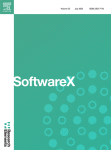
Development of applications related to closed-loop control requires either testing on the field or on a realistic simulator, with the latter being more convenient. To ease that need, this work introduces MVSim, a simulator for multiple vehicles or robots capable of running in real time dozens of agents in simple scenarios, or a handful of them in complex scenarios. MVSim employs realistic physics-grounded friction models for tire–ground interaction, and aims at accurate and GPU-accelerated simulation of most common modern sensors employed in mobile robotics and autonomous vehicle research, such as depth and RGB cameras, or 2D and 3D LiDAR scanners. All depth-related sensors are able to accurately measure distances to 3D models provided by the user to define custom world elements. Efficient simulation is achieved by means of focusing on ground vehicles, which allows the use of a simplified 2D physics engine for body collisions while solving wheel–ground interaction forces separately. The core parts of the system are written in C++ for maximum efficiency, while Python, ROS 1, and ROS 2 wrappers are also offered. A custom publish/subscribe protocol based on ZeroMQ (ZMQ) is defined to allow for multiprocess applications to access or modify a running simulation. This simulator enables and makes easier to do research and development on vehicular dynamics, autonomous navigation algorithms, and simultaneous localization and mapping (SLAM) methods. An experimental performance benchmarking is provided against other state-of-the-art simulators showing significant less CPU usage. The project source code is freely available online under the BSD 3-clause license in https://github.com/MRPT/mvsim.
Multi-agent system research is a hot topic in different application domains. In robotics, multi-agent robot systems (MRS) can realize complex tasks even if the behavior of each agent seems simple thanks to the cooperation between them. Although many control algorithms for MRS are proposed, few experimental results are validated on real data, being essential to building new testbeds to conduct MRS research and teaching. Moreover, most existing platforms for experimentation do not offer an overall solution allowing software and hardware design tools. This paper describes the design and operation of Robotic Park, a new indoor experimental platform for research in MRS. The heterogeneity and flexibility of its configuration are two of its main contributions. It supports control design and validation of MRS algorithms. Experiences can be carried out in a virtual environment, physical environment, or under a hybrid scheme, as digital twins have been developed in Gazebo and Webots. Currently, two types of aerial vehicles (Crazyflie 2.X and DJI Tello) and two types of differential mobile robots (Turtlebot3 and Khepera IV) are available. Both internal and external positioning systems using different technologies such as Motion Capture or Ultra-WideBand are also available for experiences. All components are connected through ROS2 (Robot Operating System 2) which enables experiences under a centralized, distributed, or hybrid scheme, and different communication strategies can be implemented. All these features are novelties with respect to other existing platforms. A mixed reality experience that addresses the problem of formation control using event-based control illustrates the platform usage.
Congresos internacionales
This work presents a distributed control strategy for three-dimensional rigid formations in multi-agent systems (MAS) based on the incorporation of Lagrange multipliers into the control law. The approach ensures convergence towards predefined formations on differentiable surfaces, maintaining the scalability of the system. Two different implementations are analyzed, and the results show that, under mild assumptions, the proposed controllers are locally exponentially stable. Experimental validation is carried out in a virtual environment with drones as agents. The results show a significant reduction in overshoot and control signal magnitude compared to existing approaches, while maintaining comparable settling times and consistent behavior in configurations of up to twenty agents.
This paper proposes a method to recover from the failure or loss of a subset of agents in a distance-based formation problem, where the system is initially deployed forming a virtual shield embedded in the 3D space. First, a distributed algorithm is proposed to restore the topology, which is a Delaunay triangulation. After that, the nodes execute a distance-based distributed control law that considers adaptive target distances. These values are computed in parallel by the nodes, which try to reach an agreement with some constraints, given by the desired shield shape. The updating policy is based on events. The results are illustrated through simulation examples.
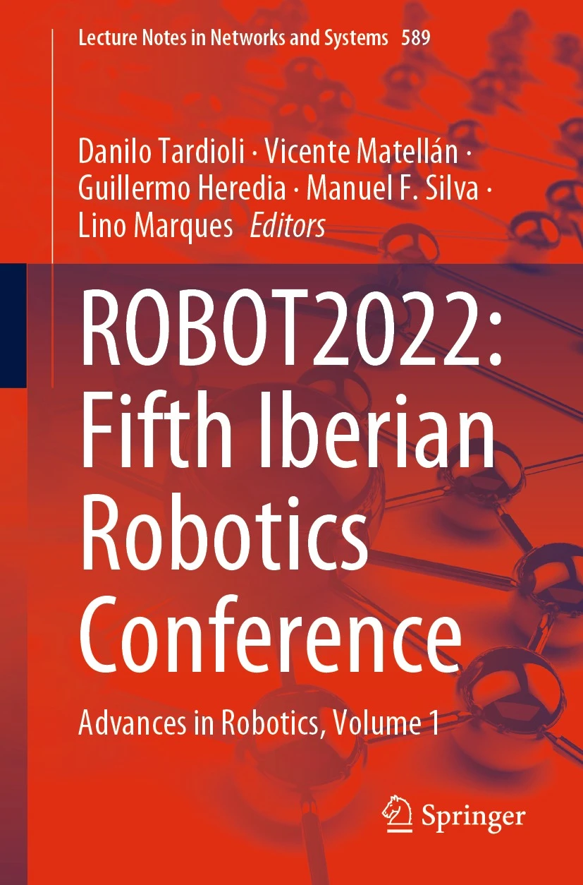
In this work, a novel algorithm for sensors calibration in quadrotor is presented. Classical procedures are used to calibrate some variables but for the others, the angular speeds, an indirect method has been proposed. The algorithm has been applied to the quadrotor Crazyflie 2.X in a practical way. The proposed method has been described in detail and it can be applied in other kind of quadrotors in a simple way. Some experiments in a real environment have been performed to validate the solution. This work is part of a framework for quadrotor control engineering that improves the global performance of the system.
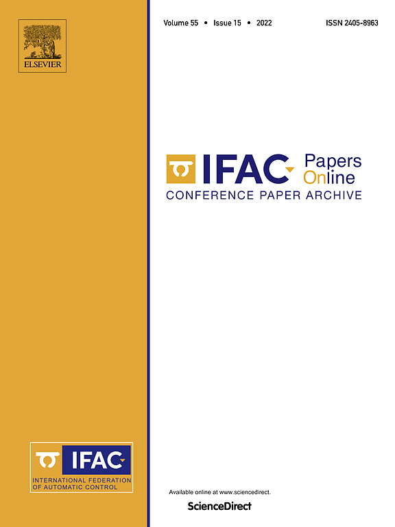
This paper presents the development of a vision based navigation control platform for conducting laboratory experiments with the micro aerial vehicle Crazyflie 2.1. A Vicon motion capture system is used to localize the nano-drone. ROS2 is used as communication layer between the crazyflies, the position control nodes and the Vicon system. The platform can be used for both research and education purposes as it is ready to design and perform experiments with the nano-drone. The architecture has been designed to optimize the available resources by means of a remote controller and event-triggered communications. The efficiency of this approach is illustrated through the experimental results of an use case.
Congresos nacionales
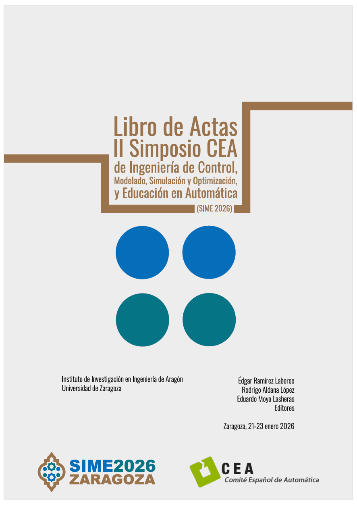
Los sistemas multi-agente robóticos han adquirido una relevancia creciente en el ámbito del control distribuido y la robótica cooperativa, especialmente en aplicaciones donde la distribución espacial de los agentes resulta determinante. En escenarios dinámicos y no estructurados, las formaciones estáticas pueden resultar ineficientes o inviables, lo que motiva el desarrollo de estrategias capaces de adaptar la geometría de la formación en tiempo real. En este trabajo se introduce el concepto de morphing aplicado al control de formaciones multi-agente, entendido como una transición continua y controlada entre distintas geometrías que preserva tanto la coherencia del grafo de interacción como los objetivos globales del sistema. Se presentan los principales retos de control asociados a este enfoque, tales como la definición de objetivos variantes en el tiempo, la gestión de restricciones dinámicas y la garantía de propiedades de estabilidad, cohesión y convergencia. Finalmente, el trabajo propone un marco general para el morphing de formaciones distribuidas ilustrado mediante un ejemplo preliminar en simulación desarrollado en MATLAB.
Este trabajo presenta la estrategia de identificación en línea y autosintonía basada en realimentación por relé simétrico con histéresis para la estimación del modelo dinámico de velocidad en robots móviles. Este método permite una estimación precisa del modelo del sistema frente a cambios de carga, reduciendo tanto la perturbación al sistema como la necesidad de conocimiento previo de su dinámica. La implementación se ha llevado a cabo en el robot Khepera IV, validándose experimentalmente en tres casos distintos: suspendido, en su configuración nominal, y con carga adicional. Los resultados demuestran que, en menos de 0.3 segundos, es posible obtener parámetros para modelos dinámicos precisos de primer y segundo orden con retardo. Sobre estos modelos se aplican reglas de sintonía SIMC (Simple Internal Model Control) para ajustar automáticamente los controladores PID. Los resultados en bucle cerrado demuestran una mejora significativa en la respuesta del controlador, con una constante de tiempo estable a pesar de variaciones en la carga.
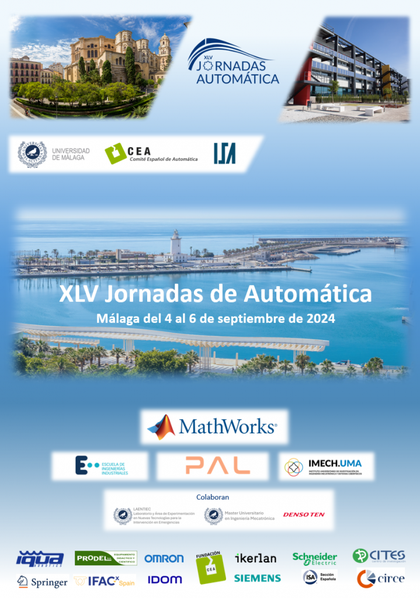
La investigación en Sistemas Multi-Agente Robóticos (SMAR) ha recibido gran atención en los últimos años, ya que la cooperación entre agentes permite al sistema realizar tareas complejas a partir de comportamientos individuales relativamente sencillos. Uno de los principales retos en este campo es lograr y mantener la formación del sistema multiagente, es decir, coordinar múltiples agentes para satisfacer las restricciones impuestas en sus estados. El presente trabajo pretende abordar este reto en el marco de Robotic Park, una plataforma experimental integrada en una red ROS2, que admite experiencias con SMAR en un entorno virtual, en un entorno físico o en un esquema híbrido, utilizando vehículos aéreos y terrestres. El benchmark propuesto permite tanto la generación de una formación objetivo como el diseño de los algoritmos de control para lograrla. Además, posibilita la evaluación del rendimiento del sistema desde diferentes aspectos, como el rendimiento del controlador local, el número de mensajes de comunicación o el uso de la CPU.
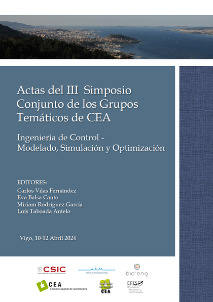
En este artículo se presenta el trabajo realizado para el desarrollo, control y evaluación de una plataforma robótica multi-agente heterogénea. El resultado principal obtenido se refleja en la plataforma Robotic Park. Sobre ella se han desarrollado y validado estrategias basadas en eventos para mejorar la eficiencia en el uso de recursos computacionales y del canal de comunicación entre agentes. Además, se han establecido las bases fundamentales para incorporar el uso de Gemelos Digitales y la Realidad Mixta en experiencias de control de formaciones. De esta forma, se pueden llevar a cabo experiencias con una mayor cantidad de agentes eludiendo las limitaciones de espacio físico, o incrementar la capacidad sensorial de los agentes empleados. Todos los desarrollos se basan en el middleware ROS 2, que permite una arquitectura del sistema flexible y escalable vía software, y favorece la integración con otro software de uso extendido en robótica.
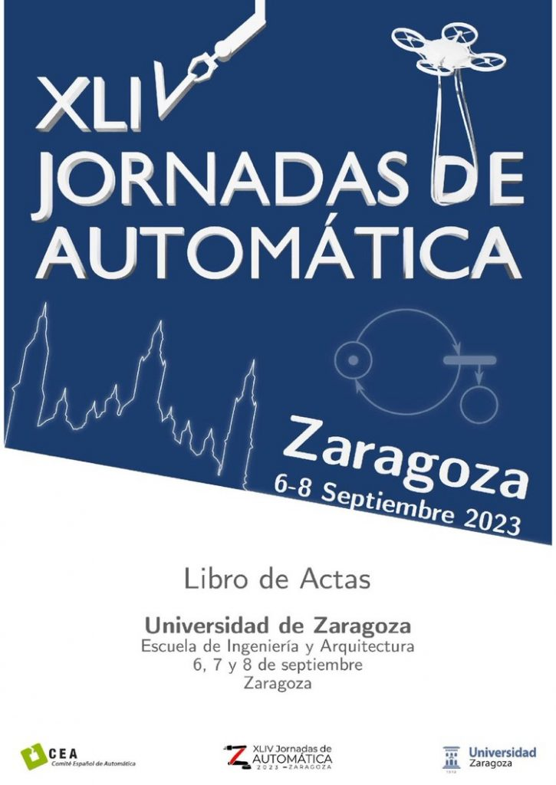
Los Sistemas Ciber-Físicos, SCFs, tienen cada vez un papel más presente en la actualidad dada la sinergia que debe existir entre el mundo físico y digital en esta sociedad “conectada”. Una parte importante de estos sistemas la ocupan los Sistemas Multi-Robot, SMRs, que pueden aportar soluciones más eficientes a gran parte de los retos de la automatización actual frente a la solución homónima proporcionada por un único robot. En el presente trabajo se examina el diseño del protocolo de comunicación entre agentes de un SMR para un problema de formación por consenso de robots aéreos. Se determina la frecuencia mínima operativa a la que debe ejecutarse la comunicación periódica entre agentes conectados, 10 Hz. Finalmente se analiza el umbral de disparo que debe tener un protocolo de comunicación basado en eventos para obtener una gestión más eficiente del canal de comunicación sin empeorar el desempeño del sistema de referencia periódico, 2 cm.
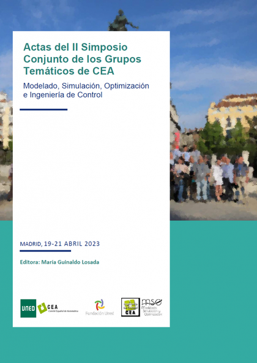
Robotic Park es una plataforma de sistemas ciberfísicos multi-agente en el campo de la robótica de reciente creación. Está enfocada al apoyo tanto de la investigación como de la educación fundamentalmente en el ámbito del control. Este tipo de plataformas deben mantenerse en continuo desarrollo para garantizar la continuidad en el trabajo de vanguardia. En este sentido, la arquitectura implementada en Robotic Park está basada en ROS 2 ya que facilita la adición de nuevos agentes, además de un sistema de comunicación descentralizado y una mayor integración con los entornos de simulación. Estos entornos de simulación se emplean, entre otras cosas, para el desarrollo de gemelos digitales de agentes reales y permiten incrementar fácilmente el número de agentes en experiencias de realidad mixta. En este trabajo se presentan distintas experiencias de control de formaciones con robots reales y virtuales. En ellas se examinan los principales índices de desempeño en la formación y la comunicación entre los agentes. Como agentes se utilizan los nanocuadricópteros Crazyflie 2.1 y los robots móviles Khepera IV. En el caso de los robots virtuales y gemelos digitales se emplea la herramienta de simulación Webots. Todos los resultados obtenidos corroboran la adecuación de las estrategias basadas en eventos para la reducción de la transmisión de mensajes y la idoneidad de la arquitectura propuesta para el desarrollo de experiencias en realidad mixta.
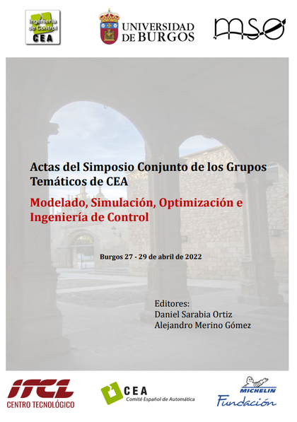
En este trabajo se presenta el desarrollo de una plataforma experimental, denominada Robotic Park, enfocada al desarrollo de experiencias en el ámbito del control y robótica. La arquitectura software se ha desarrollado en ROS2 para facilitar la integración de diferentes agentes al sistema de forma descentralizada. El sistema de posicionamiento global basado en cámaras utiliza el Tracker 3.9 de Vicon que capta el movimiento con una exactitud de mm mediante marcadores reflectantes. Como experiencia, se desarrolla una aplicación del problema clásico líder-seguidor con diferentes agentes. En este caso, los agentes son nanocuadricópteros Crazyflie 2.1. La comunicación entre agentes se lleva a cabo a través del nodo que realiza la comunicación con el dongle que controla los crazyflies. La transmisión de señales de referencia entre agentes se implementa basada en eventos para reducir el tráfico en la comunicación. Como se muestra en la sección de resultados, se consigue una reducción del 95.47 % en la comunicación sin deterioro en la respuesta de control.
Capítulos de libro
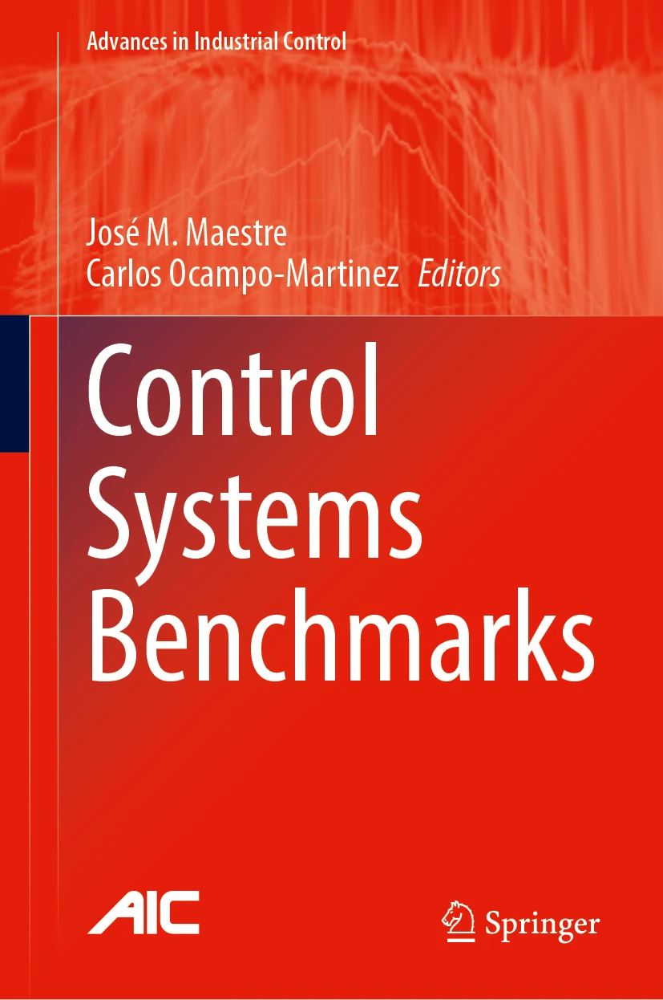
Research in cooperative multi-agent robotic systems (MARS) has received wide attention in recent years since this cooperation allows the system to perform complex tasks from relatively simple individual behaviors. One key problem to solve from the control engineer’s point of view in this setup is the achievement and maintenance of the formation of the multi-agent system, i.e., to drive multiple agents to achieve prescribed constraints on their states. In this regard, Robotic Park is an experimental platform that supports MARS experiences with different types of vehicles (aerial and ground robots). The architecture of Robotic Park allows working in a virtual environment, in a physical environment, or in a hybrid scheme. All the elements of the system are integrated into a ROS 2 network. Different aspects such as the performance of the local controllers, the number of communication messages, or the CPU usage are evaluated in the proposed benchmark.